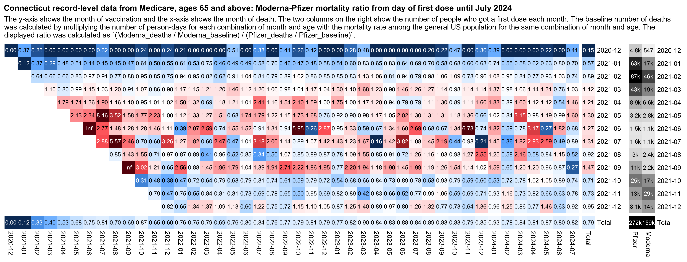
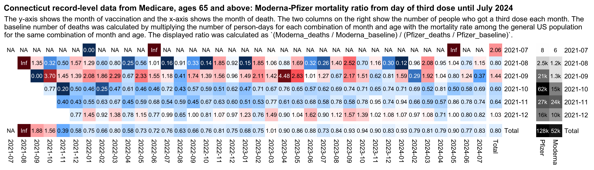
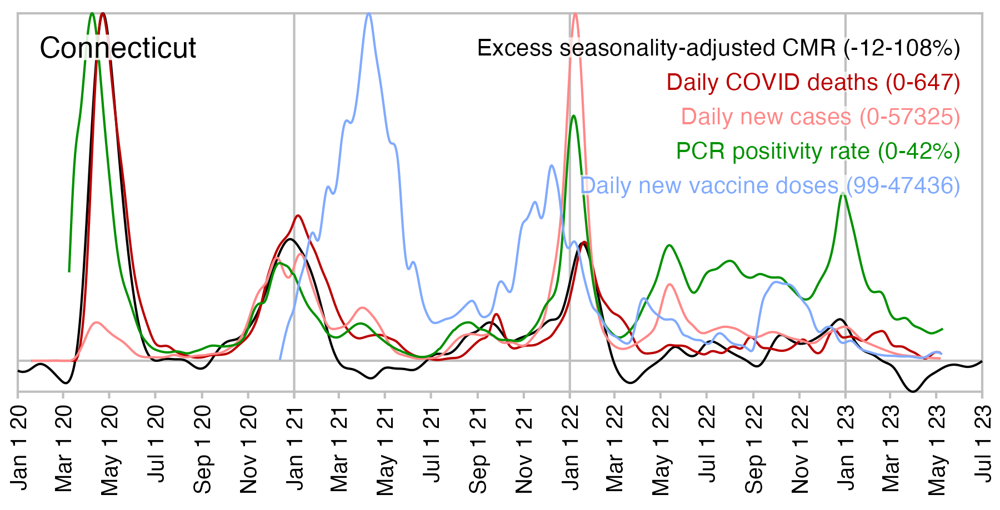

In September 2024 Steve Kirsch published a spreadsheet for Medicare data from Connecticut that contains rows for a total of about 500,000 people. The file has columns for sex, date of death, vaccine brand, the dates of the first 3 vaccine doses, and age at dose 1: https://kirschsubstack.com/p/i-have-been-fully-vindicated-by-the. The vaccine brand is presumably the brand of the first dose.
Kirsch obfuscated the vaccine brand names in his spreadsheet in order to do his ChatGPT analysis, but this code converts the spreadsheet to a CSV file with unobfuscated vaccine brand names, ISO date format, and shorter column names:
download.file("https://www.skirsch.com/covid/ct_mortality.xlsx","ct_mortality.xlsx")
t=data.table(readxl::read_excel("ct_mortality.xlsx"))
t[BRAND=="PURPLE",BRAND:="Pfizer"]
t[BRAND=="MIXED",BRAND:="Moderna"]
t[BRAND=="CHERRY",BRAND:="Janssen"]
t[BRAND=="MODERNA",BRAND:="Moderna"] # the last two rows for Moderna were accidentally not obfuscated
o=t[,.(id=PERSON_ID,sex=Sex,dead=as.Date(`Date of death`),brand=BRAND,date1=as.Date(SHOTDATE_1),date2=as.Date(SHOTDATE_2),date3=as.Date(SHOTDATE_3),age=AGE_AT_DOSE1)]
fwrite(o,"ctmort.csv.gz",na="")
I uploaded the output here: f/ctmort.csv.gz.
Medicare is generally available to only ages 65 and above, but it's also available to people under the age of 65 with disabilities: https://medicareadvocacy.org/under-65-project/. Therefore if for example you calculate a mortality rate within a year from the first dose, it's much higher for ages 60-64 than 65-69:
> ct=fread("http://sars2.net/f/ctmort.csv.gz")
> ct[,.(cmr=round(mean(!is.na(dead)&dead-date1<365,na.rm=T)*1e5),.N),.(age=age%/%5*5)][order(age)]|>print(r=F)
age cmr N
10 0 2
15 0 1
20 621 483
25 190 1055
30 306 1633
35 934 2034
40 1163 2494
45 1333 3151
50 2436 5624
55 2675 9681
60 2988 14925 # ages 60-64 have almost 3 times as high CMR as ages 65-69
65 1169 121444
70 1724 113601
75 2911 87246
80 5014 56220
85 8739 35681
90 15787 19168
95 23483 5932
100 32071 792
105 41379 29
110 100000 1
115 100000 2
age cmr N
The following script generates a buckets file for the Connecticut data, where people are grouped by the month of vaccination, ongoing month, weeks since vaccination, dose number, age, sex, and vaccine type. I assigned a random birthday to each person in order to account for the aging of people over time with a daily precision:
library(data.table);library(lubridate)
# fast way to get difference in floored years for a pair of dates after 1900 and before 2100
age=\(x,y){class(x)=class(y)=NULL;(y-x-(y-789)%/%1461+(x-789)%/%1461)%/%365}
rec=fread("http://sars2.net/f/ctmort.csv.gz")
mindate=as.Date("2020-12-1");maxdate=as.Date("2024-07-31")
t=rec[,.(id,sex,dead,type=brand,date=c(date1,date2,date3),dose=rep(1:3,each=.N),age)]
t$vaxmonth=substr(t$date,1,7)
set.seed(0);t$birth=as.Date(t$date)-years(t$age)-sample(0:364,nrow(t),T)
buck=data.table()
for(day in as.list(seq(mindate,maxdate,1))){
cat(as.character(day),"\n")
## buck=rbind(buck,unique(t[date<=day&(is.na(death)|day<=death)&day>=birth],by="id")[,.( # remove under earlier doses
buck=rbind(buck,t[date<=day&(is.na(dead)|day<=dead)&day>=birth][,.( # keep under earlier doses
month=substr(day,1,7),vaxmonth,week=as.numeric(day-date)%/%7,
age=age(birth,day),dose,type,sex,alive=1,dead=dead==day)])[,.(
alive=sum(alive),dead=sum(dead,na.rm=T)),by=.(month,vaxmonth,week,age,dose,type,sex)]
}
setorder(buck,month,vaxmonth,week,age,dose,type,sex)
fwrite(buck,"ctbucketskeep.csv.gz",quote=F)
I uploaded the output here: f/ctbucketskeep.csv.gz. In the file people are kept under earlier doses after a new dose.
In Kirsch's analysis of the Czech record-level data, his main argument why Moderna was more unsafe than Pfizer was that when he calculated age-specific mortality rates during the first year from the first dose, Moderna got about 1.3 higher mortality rate than Pfizer in different age groups. However I pointed out to him that it might have been due to some confounders he didn't adjust for in his analysis, and when I calculated an age-normalized Moderna-Pfizer mortality ratio, my total ratio for all months of vaccination was about 1.3 like in Kirsch's analysis, but my ratio fell close to 1.0 among people who were vaccinated in the fourth quarter of 2021: [czech2.html#Triangle_plot_of_Moderna_Pfizer_ratio]
In the new Connecticut data Kirsch now got about 10% higher mortality rate for Pfizer than Moderna, but he again attributed the difference to a difference in vaccine safety, even though this time Pfizer got higher mortality rates than Moderna. When someone asked Kirsch to explain it in his Substack comments, Kirsch replied: "it's a QA issue. Moderna is more deadly, but the batches are even a greater problem." [https://kirschsubstack.com/p/i-have-been-fully-vindicated-by-the/comment/70688177]
Kirsch also posted this tweet: "This is in Connecticut only. Other states had completely the opposite numbers and it was statistically significant there as well." [https://x.com/stkirsch/status/1840121580405366903] But I think he hasn't published the data for other states.
In the following code I calculated age-normalized mortality rates for each combination of vaccination month, ongoing month, and vaccine brand. And when I divided the rate for Moderna with the rate for Pfizer, the total ratio for all months of vaccination was about 0.79. Moderna got a higher rate among people who got the first dose in March, April, May, June, July, or September 2021, even though during other months the age-normalized rate was higher for Pfizer. So I think it shows that people who got Pfizer and Moderna vaccines had different profiles of confounders during different months of vaccination, even though I guess Kirsch might argue it was because some batches were more deadly than others:

library(data.table)
kimi=\(x){e=floor(log10(ifelse(x==0,1,abs(x))));e2=pmax(e,0)%/%3+1
x[]=ifelse(abs(x)<10,round(x),paste0(round(x/1e3^(e2-1),ifelse(e%%3==0,1,0)),c("","k","M","B","T")[e2]));x}
type1="Moderna";type2="Pfizer"
b=fread("http://sars2.net/f/ctbucketskeep.csv.gz")
a=b[age>=65&dose==1,.(dead=sum(dead),alive=sum(alive)),.(type,month,vaxmonth,age=pmin(age,100))]
pop=fread("http://sars2.net/f/uspopdead.csv")
a=merge(a,pop[,.(month=date,age,base=dead/persondays)])[,base:=base*alive]
a=a[month>="2020-12"&vaxmonth>="2020-12"&vaxmonth<="2021-12"]
a=rbind(a,a[,.(dead=sum(dead),alive=sum(alive),base=sum(base),month="Total"),.(age,vaxmonth,type)])
a=rbind(a,a[,.(dead=sum(dead),alive=sum(alive),base=sum(base),vaxmonth="Total"),.(age,month,type)])
a=a[,.(rat=sum(dead)/sum(base),alive=sum(alive)),.(type,vaxmonth,month)]
ar=tapply(a$rat,a[,1:3],c)
m1=ar[type1,,];m2=ar[type2,,]
m=(m1-m2)/ifelse(m1>m2,m2,m1)
disp=m1/m2;disp=ifelse(disp>=10,sprintf("%.1f",disp),sprintf("%.2f",disp))
disp[lower.tri(disp)&row(disp)!=nrow(disp)]=""
exp=.9;m=abs(m)^exp*sign(m)
maxcolor=4^exp
m[m==Inf]=maxcolor;m[m==-Inf]=-maxcolor
pheatmap::pheatmap(m,filename="mort.png",display_numbers=disp,
gaps_col=ncol(m)-1,gaps_row=nrow(m)-1,cluster_rows=F,cluster_cols=F,legend=F,
cellwidth=19,cellheight=19,fontsize=9,fontsize_number=8,border_color=NA,na_col="white",
number_color=ifelse(!is.na(m)&abs(m)>.5*maxcolor,"white","black"),
breaks=seq(-maxcolor,maxcolor,,256),
colorRampPalette(hsv(rep(c(7/12,0),4:5),c(.9,.75,.6,.3,0,.3,.6,.75,.9),c(.4,.65,1,1,1,1,1,.65,.4)))(256))
mort=fread("http://sars2.net/f/ctmort.csv.gz")
pop=mort[age>=65&date1<"2022-1-1",table(format(date1,"%Y-%m"),brand)][,c("Pfizer","Moderna")]
pop=rbind(pop,Total=colSums(pop))
exp2=.6;maxcolor2=max(pop[-nrow(pop),])
pheatmap::pheatmap(pop^exp2,filename="pop.png",display_numbers=kimi(pop),
gaps_row=nrow(m)-1,cluster_rows=F,cluster_cols=F,legend=F,
cellwidth=19,cellheight=19,fontsize=9,fontsize_number=8,border_color=NA,na_col="white",
number_color=ifelse(pop^exp2>maxcolor2^exp2*.45,"white","black"),
breaks=seq(0,maxcolor2^exp2,,256),sapply(seq(1,0,,256),\(i)rgb(i,i,i)))
system("magick mort.png \\( pop.png -chop 14x -splice x5 \\) +append 0.png;w=`identify -format %w 0.png`;pad=22;magick -pointsize 46 -font Arial-Bold -interline-spacing -2 \\( -size $[w-pad*2]x caption:'Connecticut record-level data from Medicare, ages 65 and above: Moderna-Pfizer mortality ratio from day of first dose until July 2024' -splice $[pad]x20 \\) \\( -pointsize 42 -font Arial caption:'The y-axis shows the month of vaccination and the x-axis shows the month of death. The two columns on the right show the number of people who got a first dose each month. The baseline number of deaths was calculated by multiplying the number of person-days for each combination of month and age with the mortality rate among the general US population for the same combination of month and age. The displayed ratio was calculated as `(Moderna_deaths / Moderna_baseline) / (Pfizer_deaths / Pfizer_baseline)`.' -splice $[pad]x14 \\) 0.png -append 1.png")
For third doses the total Moderna-Pfizer ratio was also about 0.8, but the ratio was about 1.44 in people who got a third dose in September 2021:

I wasn't able to include doses from 2022 in the plots above, because the Connecticut dataset only includes a total of 4 third doses with a date in 2022. I don't know if it was meant to only include doses given before 2022 but a few doses from 2022 were accidentally included.
Kirsch has been saying that the temporal healthy vaccinee effect only lasts about 3 weeks because in his earlier Medicare datasets when he has plotted the number of deaths by weeks since vaccination, the period when there was clearly reduced mortality seemed to last only about 3 weeks: [https://kirschsubstack.com/p/game-over-medicare-data-shows-the#%C2%A7the-medicare-data-that-i-received]

However the Medicare data for 2021 has a bump around days 20 to 25 that is missing from the Medicare data for 2022:

Kirsch's old Medicare data only included the earliest known vaccine dose for each person, which was generally the first dose. And in the elderly age groups which account for most deaths, many people got the first dose in the first two months of 2021 when there was rapidly decreasing mortality in the United States because the COVID wave in winter 2020-2021 was passing by. So I think it explains why there's the bump around days 20 to 25 in 2021 but not 2022.
In the Czech Republic first doses were also rolled out in early 2021 when there was a rapidly decreasing trend in mortality rate because the COVID wave in winter 2020-2021 was passing by. In the plots below for Czech record-level data, I calculated the light gray baseline by multiplying the number of person-days for each combination of age and month by the mortality rate for the same combination of age and month among the general Czech population, so the there's a huge drop in the light gray baseline during the first 10 weeks from vaccination. But in the dark gray baseline I didn't use a different mortality rate for each month but I simply used the total mortality rate for each age in 2021-2022 as the baseline. Based on the dark gray baseline which is only normalized for age but not ongoing month, it would seem like the temporal healthy vaccinee effect only lasts about 2 or 3 weeks, but based on the light gray baseline the temporal HVE seems to last much longer: [czech.html#Deaths_by_weeks_after_first_dose]


However now the new Medicare data makes it possible to do similar plots for US data. And in fact there's a massive drop in the light gray baseline during the first few weeks after vaccination, even though the baseline started to increase after week 6, so when I calculated excess mortality relative to the light gray baseline, there wasn't a very long extension to the period that seems to be impacted by the temporal HVE:


b=fread("http://sars2.net/f/ctbucketskeep.csv.gz")[dose==1]
a=b[age>=65,.(dead=sum(dead),alive=sum(alive)),.(month,age,week)]
pop=fread("http://sars2.net/f/uspopdead.csv")
a=merge(a,pop[,.(base=dead/persondays,month=date,age)])
rate1=a[,.(rate1=sum(dead)/sum(alive)),age]
rate2=a[,.(rate2=sum(dead)/sum(alive)),.(month,age)]
a=merge(rate2,merge(rate1,a),by=c("month","age"))
p=a[,.(excess1=(sum(dead)/sum(rate1*alive)-1)*100,excess2=(sum(dead)/sum(rate2*alive)-1)*100),week]
p=a[,.(dead=sum(dead),base1=sum(rate1*alive),base2=sum(rate2*alive)),week][order(week)]
p=p[week<=100]
leg=c("Deaths","Same baseline for each month","Different baseline for each month")
col=c("black","gray50","gray80")
png("1.png",1200,800,res=200)
par(mar=c(2.3,3,2.1,1.8),mgp=c(0,.6,0))
tit="CT: Deaths by weeks after first dose"
plot(p$week,p$dead,type="l",col=col[1],main=tit,xlab=NA,ylab=NA,lwd=1.5,xaxs="i",yaxs="i",las=1,ylim=c(0,500))
lines(p$week,p$base1,type="l",col=col[2],lwd=1.5)
lines(p$week,p$base2,type="l",col=col[3],lwd=1.5)
legend("bottom",legend=leg,col=col,lty=1,lwd=1.5)
dev.off()
png("2.png",1200,800,res=200)
par(mar=c(2.3,3,2.1,1.8),mgp=c(0,.6,0))
tit="CT: Excess mortality percent by weeks after first dose"
leg=leg[-1];col=col[-1]
plot(p$week,(p$dead/p$base1-1)*100,type="l",col=col[1],main=tit,xlab=NA,ylab=NA,lwd=1.5,xaxs="i",las=1)
lines(p$week,(p$dead/p$base2-1)*100,type="l",col=col[2],lwd=1.5)
abline(h=0,lwd=1.5,lty=2)
legend("bottom",legend=leg,col=col,lty=1,lwd=1.5)
dev.off()
In the plots above for the Connecticut data, there's close to 0% excess mortality from week 20 onwards if you look at the light gray line where each month has a different baseline. But in the plot before it for the Czech data there was about -20% to -10% from around week 20 onwards. In both plots the baseline was derived from the mortality rate of the general population which included both unvaccinated and vaccinated people, but in the US plot vaccinated people who were not on Medicare were included in the baseline but not in the actual deaths. I included all ages in the Czech plots but only ages 65 and above in the Medicare plots, but it shouldn't make much difference.
The reason why the plots for Connecticut had close to 0% excess deaths might have been if vaccinated people who are on Medicare had higher ASMR than vaccinated people in the general US population, which might be if people on Medicare have lower SES than the general US population.
In July 2021 about half of the Connecticut population in ages 65 and above seems to be enrolled to Medicare. [https://data.cms.gov/summary-statistics-on-beneficiary-enrollment/medicare-and-medicaid-reports/medicare-monthly-enrollment] Kirsch's dataset includes only about 70% of the enrolled population, so it's probably missing some vaccinated people on Medicare. Kirsch's dataset includes 440,116 people whose age at the time of the first dose was 65 or above, which is only about 34% of the estimated resident population of Connecticut in ages 65 and above in 2021:
> t=fread("Medicare Monthly Enrollment Data_May2024.csv",na.strings="*")
> t[YEAR==2021&MONTH=="Year"&BENE_STATE_ABRVTN=="CT"&BENE_COUNTY_DESC=="Total",28:34]|>sum()
[1] 626640
> ct=fread("http://sars2.net/f/ctmort.csv.gz")
> ct[age>=65,.N]
[1] 440116
> pop=fread("https://www2.census.gov/programs-surveys/popest/datasets/2020-2022/state/asrh/sc-est2022-alldata6.csv")
> pop[NAME=="Connecticut"&SEX==0&AGE>=65,sum(POPESTIMATE2021)]
[1] 1288392
Another reason why I got close to 0% excess deaths in my plot above might be that the percentage of unvaccinated people is lower in the United States than the Czech Republic, and it's even lower in northeastern states like Connecticut than in the US as a whole. So my baseline for Connecticut contains a smaller percentage of unvaccinated people than the baseline for the Czech Republic, which might explain why vaccinated people in Connecticut would have similar mortality as the general population of Connecticut.
In the Czech record-level data during the COVID wave in November to December 2021, unvaccinated people had a much higher spike in ASMR than vaccinated people. The spike was higher for people who got a Janssen or AstraZeneca vaccine for their first dose but lower for Moderna and Pfizer, which might mean that the mRNA vaccines had higher efficacy than Janssen and AstraZeneca which are viral vector vaccines: [czech2.html#ASMR_by_month_and_vaccine_type]

Connecticut didn't have any major wave of COVID deaths after the winter of 2020-2021, even though there was a smaller spike in COVID deaths around January 2022. In the plot below the spike around January 2022 seems to be higher for Jansssen than Moderna or AstraZeneca, which again might mean that Janssen had lower efficacy than the mRNA vaccines (even though Janssen also has wide confidence intervals because of a small sample size):

library(data.table);library(ggplot2)
std=fread("https://www2.census.gov/programs-surveys/popest/datasets/2020-2022/national/asrh/nc-est2022-agesex-res.csv")
std=std[SEX==0&AGE!=999,.(std=POPESTIMATE2021,age=AGE)][,std:=std/sum(std)]
b=fread("http://sars2.net/f/ctbucketskeep.csv.gz")[dose==1&age>=65][,age:=pmin(age,100)]
a=b[,.(dead=sum(dead),alive=sum(alive)),.(type,month,age)]
a=rbind(a,a[,.(dead=sum(dead),alive=sum(alive),type="All vaccine types"),.(month,age)])
p=merge(a,std)[,.(pop=sum(alive),asmr=sum(dead/alive*std*365e5)),.(month,type)]
p[,month:=as.Date(paste0(month,"-1-15"))]
p$type=factor(p$type,c("All vaccine types","Pfizer","Moderna","Janssen"))
xstart=as.Date("2020-12-1");xend=as.Date("2024-7-1")
xbreak=sort(c(as.Date("2024-4-1"),seq(as.Date("2021-1-1"),xend,"6 month")))
xlab=c(rbind("",2021:2024),"")
ystart=0;ystep=500;yend=max(p$asmr);ybreak=seq(ystart,yend,ystep)
color=c("black",hsv(c(240,355,204)/360,c(.94,.75,.67),c(.76,.82,.87)))
ggplot(p,aes(x=month+15,y=asmr))+
geom_vline(xintercept=seq(as.Date("2021-1-1"),xend,"3 month"),color="gray85",linewidth=.3,lineend="square")+
geom_vline(xintercept=seq(as.Date("2021-1-1"),xend,"year"),color="gray65",linewidth=.3,lineend="square")+
geom_vline(xintercept=c(xstart,xend),linewidth=.3,lineend="square")+
geom_hline(yintercept=c(ystart,0,yend),linewidth=.3,lineend="square")+
geom_line(aes(color=type),linewidth=.4)+
geom_point(aes(color=type),stroke=0,size=1,show.legend=F)+
labs(title="Connecticut Medicare data, ages 65+: ASMR by month and brand of first vaccine dose",subtitle=paste0("People are kept included under the first dose after subsequent doses. The 2021 US resident population estimates were used as the standard population.")|>stringr::str_wrap(90),x=NULL,y="ASMR per 100,000 person-years")+
scale_x_date(limits=c(xstart,xend),breaks=xbreak,labels=xlab)+
scale_y_continuous(limits=c(ystart,yend),breaks=seq(ystart,yend,ystep))+
scale_color_manual(values=color)+
coord_cartesian(clip="off",expand=F)+
theme(axis.text=element_text(size=7,color="black"),
axis.title=element_text(size=7),
axis.ticks=element_line(linewidth=.3),
axis.ticks.x=element_line(color=alpha("black",c(1,0))),
axis.ticks.length=unit(3,"pt"),
legend.direction="vertical",
legend.background=element_rect(fill="white",color="black",linewidth=.3),
legend.key.height=unit(11,"pt"),
legend.key.width=unit(18,"pt"),
legend.key=element_rect(fill="white"),
legend.margin=margin(-1,6,4,4),
legend.justification=c(1,1),
legend.position=c(1,1),
legend.spacing.x=unit(1.5,"pt"),
legend.text=element_text(size=7),
legend.title=element_blank(),
panel.grid.major=element_blank(),
panel.background=element_rect(fill="white"),
plot.margin=margin(4,6,4,6),
plot.subtitle=element_text(size=7,margin=margin(0,0,4,0)),
plot.title=element_text(size=7.4,face="bold",margin=margin(2,0,4,0)))
ggsave("1.png",width=4.8,height=2.7,dpi=400)
This shows that in April 2021 when new vaccine doses peaked, the seasonality-adjusted excess mortality was negative. And spikes in exces sdeaths coincided with spikes in PCR positivity rate so it's difficult to blame the excess deaths on vaccines:

My plot was based on these datasets: